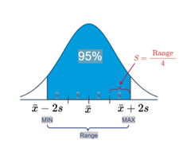
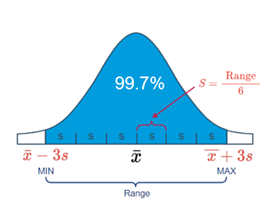

Chapter 2 Estimating a population mean μ
The sample size necessary for estimating a population mean μ with \((1 - \alpha)100\%\) confidence and error no larger than \(\epsilon\) is given by:
\[ n = \frac{(z_{(\alpha/2)}^2 \cdot s^2)}{\epsilon^2} \]
Typically, the hardest part of determining the necessary sample size is finding \(s^2\), that is, a decent estimate of the population variance. There are a few ways of obtaining \(s^2\).
2.1 Ways to Determine \(s^2\)
You can often get \(s^2\), an estimate of the population variance from the scientific literature. After all, scientific research is typically not done in a vacuum. That is, what one researcher is studying and reporting in scientific journals is typically also studied and reported by several other researchers in various locations around the world. If you’re in need of an estimate of the variance of the front leg length of red-eyed tree frogs, you’ll probably be able to find it in a research paper reported in some scientific journal.
You can often get \(s^2\), an estimate of the population variance by conducting a small pilot study on 5-10 people (or trees or snakes or… whatever you’re measuring).
You can often get \(s^2\), an estimate of the population variance by using what we know about the Empirical Rule, which states that we can expect 95% of the observations to fall in the interval: \[ \bar{x} \pm 2s \]
Here’s a picture that illustrates how this part of the Empirical Rule can help us determine a reasonable value of \(s\):
Empirical Rule Image 1
That is, we could define the range of values as that which captures 95% of the measurements. If we do that, then we can work backwards to see that \(s\) can be determined by dividing the range by 4. That is: \[ s = \frac{\text{Range}}{4} = \frac{\text{Max} - \text{Min}}{4} \]
When statisticians use the Empirical Rule to help a researcher arrive at a reasonable value of \(s\), they almost always use the above formula. That said, there may be occasions in which it is worthwhile using another part of the Empirical Rule, namely that we can expect 99.7% of the observations to fall in the interval: \[ \bar{x} \pm 3s \]
Here’s a picture that illustrates how this part of the Empirical Rule can help us determine a reasonable value of \(s\):
Empirical Rule Image 2
In this case, we could define the range of values as that which captures 99.7% of the measurements. If we do that, then we can work backwards to see that \(s\) can be determined by dividing the range by 6. That is: \[ s = \frac{\text{Range}}{6} = \frac{\text{Max} - \text{Min}}{6} \]
2.2 Example 1.2 (Continued)
A researcher wants to estimate \(\mu\), the mean systolic blood pressure of adult Americans, with 95% confidence and error \(\epsilon\) no larger than 3 mm Hg. How many adult Americans, \(n\), should the researcher randomly sample to achieve her estimation goal?
2.2.1 Answer
If the maximum error \(\epsilon\) is 3, and the sample variance is \(s^2 = 10^2\), we need:
\[ n = \frac{(1.96)^2 \cdot (10)^2}{3^2} = 42.7 \]
or 43 people to estimate \(\mu\) with 95% confidence. In general, when making sample size calculations such as this one, it is a good idea to change all of the factors to see what the “cost” in sample size is for achieving certain errors \(\epsilon\) and confidence levels \((1 - \alpha)\). Doing that here, we get: